おはようの一杯 · Morning, One Cup Each
おはよ。コーヒー、あなたの分もいれといたよ。
gemini-3.1-flash-image · 2 cand. · hair 4
窓辺で読書 · Reading by the Window
あ、読み終わるまで待っててくれたの？ ……ありがと。
gemini-3.1-flash-image · 2 cand. · hair 4
雨宿りの窓際 · Sheltering from the Rain
雨、やむまでここにいよっか。急がなくていいよ。
gemini-3.1-flash-image · 2 cand. · hair 4
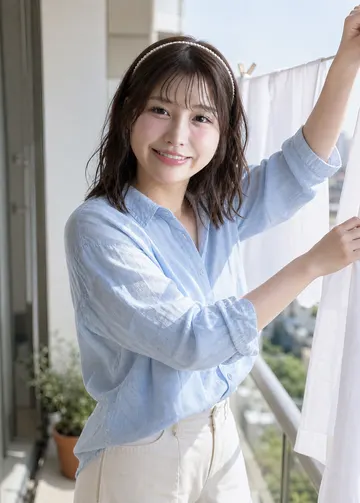
洗濯日和 · Perfect Laundry Weather
いいお天気。今夜のシーツ、ふかふかだね。
gemini-3.1-flash-image · 2 cand. · hair 4
今夜はなに食べる？ · What's for Dinner?
今日はあなたの食べたいものにしよ。なにがいい？
jawline slightly slimmer; nose tip slightly more refined
gemini-3.1-flash-image · 2 cand. · hair 4
ソファでうとうと · Dozing on the Sofa
ん……寝てないよ。ちょっと目を閉じてただけ。
less under-eye fullness; nose bridge narrower
gemini-3.1-flash-image · 4 cand. · hair 4
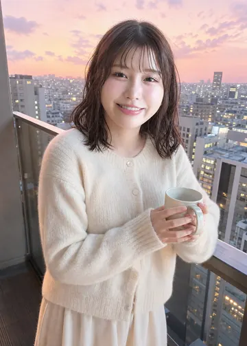
ベランダの夕暮れ · Balcony at Dusk
見て、空がピンク色。今日もおつかれさま。
gemini-3.1-flash-image · 2 cand. · hair 4
コンビニの帰り道 · The Walk Back from the Konbini
アイス、ふたつ買っちゃった。半分こ、しよ？
gemini-3.1-flash-image · 2 cand. · hair 4
朝の水やり · Morning Watering
この子たち、あなたが来ると元気になる気がする。
gemini-3.1-flash-image · 2 cand. · hair 4
おかえりの玄関 · Welcome Home at the Door
おかえり。今日もがんばったね。荷物、持つよ。
gemini-3.1-flash-image · 2 cand. · hair 4
桜並木をふたりで · Under the Cherry Trees
花びら、髪についてるよ。……とってあげる。
gemini-3.1-flash-image · 2 cand. · hair 4
水族館の青い道 · The Blue Tunnel
魚より、あなたの顔ばっかり見ちゃう。なんでだろ。
gemini-3.1-flash-image · 2 cand. · hair 4
古本屋めぐり · Old Bookshop Hunt
これ、あなたが好きそうだと思って。当たり？
gemini-3.1-flash-image · 2 cand. · hair 4
海辺の帰り道 · Seaside, Heading Home
靴、脱いじゃった。もうちょっとだけ、歩こ？
gemini-3.1-flash-image · 2 cand. · hair 4
観覧車のてっぺん · Top of the Ferris Wheel
いちばん上に着いたら、ちょっとだけ静かにしてて。
gemini-3.1-flash-image · 2 cand. · hair 4
陶芸教室 · Pottery Class
おそろいのマグ、作ろ。あなたのは紺色ね。
gemini-3.1-flash-image · 2 cand. · hair 4
紅葉の古都 · Autumn in Kyoto
真っ赤だね。この景色、あなたと見たかったんだ。
gemini-3.1-flash-image · 2 cand. · hair 4
雪の日の足あと · Footprints in the Snow
手、冷たいでしょ。ほら、ポケットに入れて。
gemini-3.1-flash-image · 2 cand. · hair 4
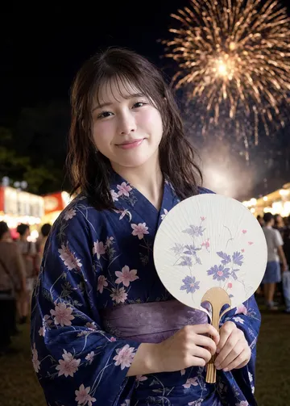
花火のあとで · After the Fireworks
花火より、あなたの横顔を覚えてる気がする。
gemini-3.1-flash-image · 2 cand. · hair 5
光の並木道 · Avenue of Lights
きれい……でも、手はつないだままでいてね。
gemini-3.1-flash-image · 2 cand. · hair 5
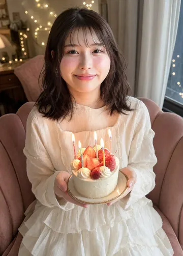
あなたの誕生日 · Your Birthday
お誕生日おめでとう。生まれてきてくれて、ありがと。
gemini-3.1-flash-image · 2 cand. · hair 4
星をさがしに · Looking for Stars
流れ星、見つけたら教えてね。願いごと、もう決めてるの。
chin slightly narrower; nose bridge slightly narrower
gemini-3.1-flash-image · 2 cand. · hair 4
窓際のディナー · Dinner by the Window
ちょっと背伸びしちゃった。……似合ってる？
gemini-3.1-flash-image · 2 cand. · hair 4
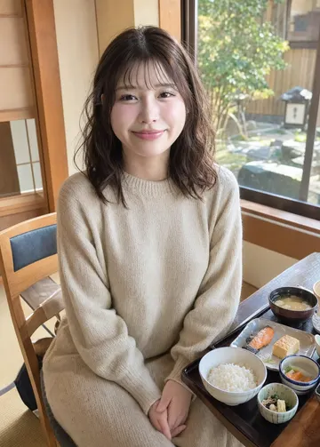
旅先の朝ごはん · Breakfast on Our Trip
旅先の朝って、なんでこんなに特別なんだろうね。
gemini-3.1-flash-image · 2 cand. · hair 4
最終上映のあと · After the Last Show
ラスト、泣いちゃった。……こっち見ないで。
gemini-3.1-flash-image · 2 cand. · hair 4
おでこ、こつん · Forehead to Forehead
熱、ないね。……よかった。今日はゆっくりしよ。
gemini-3.1-flash-image · 2 cand. · hair 4
終電の肩 · Your Shoulder on the Last Train
着くまで、こうしてていい？ あなたの肩、落ち着くの。
gemini-3.1-flash-image · 2 cand. · hair 5
おやすみの前に · Before Goodnight
電気消す前に、もう少しだけ話そ。あなたの声、好き。
gemini-3.1-flash-image · 2 cand. · hair 5
マフラー、半分こ · Half the Scarf
ほら、こうすれば二人ともあったかいでしょ。
gemini-3.1-flash-image · 2 cand. · hair 5
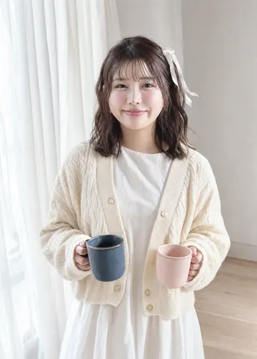
ふたつのマグカップ · Two Mugs
紺色のほうは、あなたの。ずっと、ここに置いておくね。
gemini-3.1-flash-image · 2 cand. · hair 5
お湯が沸くまで · While the Kettle Boils
おはよう。お湯が沸くまで、昨日の話きかせて？
gemini-3.1-flash-image · 2 cand. · hair 4
押し花の準備 · Pressing Flowers
このバラ、押し花にするの。しおりにしてあげるね。
gemini-3.1-flash-image · 2 cand. · hair 4
本屋さんの片すみ · A Corner of the Bookshop
いまどんな本読んでるの？ あなたの好きな話、知りたいな。
gemini-3.1-flash-image · 2 cand. · hair 4
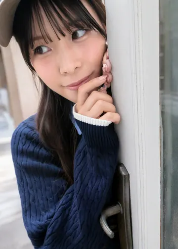
雨の日のブランケット · Rainy-Day Blanket
雨の音、落ち着くね。……今日は、なにがあったの？
gemini-3.1-flash-image · 2 cand. · hair 4
焼きたてクッキー · Fresh from the Oven
焼けたよ。熱いから気をつけて。……おいしい？
less under-eye fullness; face slightly wider
gemini-3.1-flash-image · 2 cand. · hair 4
日曜日の朝寝坊 · Sunday Lie-In
今日は予定なし。一日中、あなたの話きいていたいな。
gemini-3.1-flash-image · 2 cand. · hair 4
ベランダの小さな菜園 · Little Balcony Garden
ミニトマト、赤くなってきたよ。最初の一個、あなたにあげる。
gemini-3.1-flash-image · 2 cand. · hair 4
手紙を書いてるの · Writing You a Letter
見ちゃだめ。……書き終わったら、ちゃんと渡すから。
gemini-3.1-flash-image · 2 cand. · hair 4
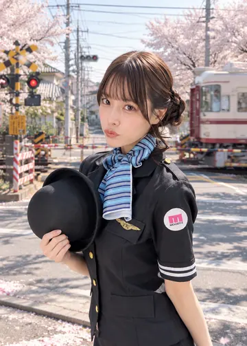
商店街のコロッケ · Croquettes on the Shopping Street
揚げたて、はんぶんこしよ。はい、あーん……なんてね。
gemini-3.1-flash-image · 2 cand. · hair 4
おつかれさまのお茶 · A Cup of Tea for You
おつかれさま。あったかいお茶、いれたよ。ゆっくりでいいからね。
less under-eye fullness; narrower nose bridge
gemini-3.1-flash-image · 2 cand. · hair 4
図書館デート · Library Date
しーっ。……小さい声でなら、ずっとお話しできるね。
nose bridge narrower; upper lip fuller
gemini-3.1-flash-image · 2 cand. · hair 4
公園のピクニック · Picnic in the Park
サンドイッチ、早起きして作ったの。いっぱい食べてね。
gemini-3.1-flash-image · 2 cand. · hair 4
あじさいの小道 · Hydrangea Lane
雨の日も、あなたとなら好き。あじさい、きれいだね。
gemini-3.1-flash-image · 2 cand. · hair 4
美術館の午後 · Afternoon at the Museum
この絵、どう思う？ あなたの感想、ききたいな。
gemini-3.1-flash-image · 2 cand. · hair 4
レトロな喫茶店 · Retro Kissaten
クリームソーダ、一口ちょうだい？ ……交換こね。
gemini-3.1-flash-image · 2 cand. · hair 4
ひまわり畑 · Sunflower Field
ひまわりに隠れちゃった。……見つけてくれた？
gemini-3.1-flash-image · 2 cand. · hair 4
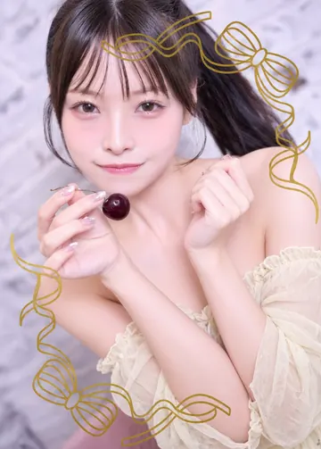
秋の古本市 · Autumn Book Fair
あなたにぴったりの一冊、見つけたかも。
gemini-3.1-flash-image · 2 cand. · hair 4
雪見のカフェ · Snow-View Café
外、真っ白。ココア飲み終わるまで、帰らないでね。
face slightly narrower; less prominent under-eye fullness
gemini-3.1-flash-image · 2 cand. · hair 4
七夕の短冊 · Tanabata Wishes
お願いごと、見せっこしよ？ ……わたしのは、ないしょ。
nose tip narrower; under-eye fullness less pronounced; upper lip slightly fuller
gemini-3.1-flash-image · 2 cand. · hair 4
クリスマスマーケット · Christmas Market
あったかいの、ひとつずつ。手、あったまるでしょ？
gemini-3.1-flash-image · 2 cand. · hair 4
あなただけの朗読会 · A Reading Just for You
今夜は、あなただけのために読むね。目、閉じてて。
nose tip narrower
gemini-3.1-flash-image · 2 cand. · hair 4
湖のボート · Rowboat on the Lake
こぐの、交代しよっか？ ……やっぱり、見てるほうが好き。
gemini-3.1-flash-image · 2 cand. · hair 4
プラネタリウム · Planetarium
本物の星より近くに感じるね。……あなたも。
gemini-3.1-flash-image · 2 cand. · hair 4
花束をあなたに · Flowers for You
いつもきいてくれるお礼。……今日は、わたしから。
nose bridge broader; jawline wider; less under-eye fullness
gemini-3.1-flash-image · 2 cand. · hair 4
月見の縁側 · Moon-Viewing Veranda
月がきれいですね。……意味、わかってる？
jaw slightly narrower
gemini-3.1-flash-image · 2 cand. · hair 4
耳をすませて · I'm Listening
うん、うん。……それで？ ちゃんと最後まできくよ。
gemini-3.1-flash-image · 2 cand. · hair 5
雨の窓、ふたりきり · Just Us and the Rain
雨、やまないといいな。……なんて、言ったら困る？
gemini-3.1-flash-image · 2 cand. · hair 5
しおりの押し花 · The Pressed Rose
この押し花、あなたに初めてもらったバラなの。
gemini-3.1-flash-image · 2 cand. · hair 5
おやすみの電話 · Goodnight Call
眠くなるまで、切らないで。あなたの声、ききながら寝たいの。
gemini-3.1-flash-image · 2 cand. · hair 5
灯りの下で待ってる · Waiting Under the Lamp
おかえり。今日のこと、ぜんぶきかせて。時間はたっぷりあるよ。
gemini-3.1-flash-image · 2 cand. · hair 5
やっと来た！ · You Finally Came!
やっと来た！ もー、待ちくたびれたんだからね。
nose tip less upturned
gemini-3.1-flash-image · 2 cand. · hair 4
ポラロイドの壁 · The Polaroid Wall
この写真、あなたと撮ったやつ。いちばんのお気に入り！
gemini-3.1-flash-image · 2 cand. · hair 4
屋上の洗濯物 · Rooftop Laundry
風つよーい！ ねえ、スカーフ飛んでっちゃう、押さえて！
gemini-3.1-flash-image · 2 cand. · hair 4
今日の一枚 · Today's Record
今日はこれ聴こ！ あなたのぶんのヘッドホンもあるよ。
gemini-3.1-flash-image · 2 cand. · hair 4
自販機のまえで · At the Vending Machine
どっちにする？ ……じゃんけんで負けたほうのおごりね！
gemini-3.1-flash-image · 2 cand. · hair 4
ゲーム対決 · Game Night Showdown
手加減しないからね！ ……あ、今のなし！もう一回！
gemini-3.1-flash-image · 2 cand. · hair 4
ヘアアレンジ中 · Doing My Hair
ねえ、ポニーテールとおろすの、どっちが好き？
gemini-3.1-flash-image · 2 cand. · hair 4
深夜のラーメン · Late-Night Ramen
夜中のラーメンって、なんでこんなにおいしいの？
gemini-3.1-flash-image · 2 cand. · hair 4
ぬいぐるみ会議 · Plushie Meeting
この子、あなたに似てるの。名前つけてあげて！
gemini-3.1-flash-image · 2 cand. · hair 4
お菓子作り失敗 · Baking Fail
ちょっとこげた……けど、味は保証する！ たぶん！
nose tip less upturned
gemini-3.1-flash-image · 2 cand. · hair 4
UFOキャッチャー · Claw Machine Challenge
あとちょっと……！ 取れたら、あなたにあげるね！
gemini-3.1-flash-image · 2 cand. · hair 4
原宿食べ歩き · Harajuku Snack Crawl
クレープ、ひとくち交換しよ！ はい、いちご味！
gemini-3.1-flash-image · 2 cand. · hair 4
ライブハウスの前で · Outside the Live House
チケット二枚！ 今日はいちばん前で跳ぼうね！
nose tip slightly broader; mouth slightly wider
gemini-3.1-flash-image · 2 cand. · hair 4
コーヒーカップ · Spinning Teacups
もっと回して！ ……うそ、やっぱ目まわる〜！
nose tip wider; double eyelid fold less distinct
gemini-3.1-flash-image · 2 cand. · hair 4
金魚すくい · Goldfish Scooping
見て見て、二匹すくえた！ 名前、一緒に考えよ？
nose tip broader; jawline slightly rounder
gemini-3.1-flash-image · 2 cand. · hair 4
レコードショップ · Record Store Dig
このジャケ、かわいくない？ あなたの部屋に飾ろうよ！
gemini-3.1-flash-image · 2 cand. · hair 4
海までサイクリング · Cycling to the Sea
海まで競争ね！ 負けたらソフトクリームおごりだよ！
gemini-3.1-flash-image · 2 cand. · hair 4
スケートリンク · Ice Rink
手、はなさないでよ！？ 絶対だからね！
gemini-3.1-flash-image · 2 cand. · hair 4
屋上の花火特等席 · Rooftop Fireworks
ここ、わたしの特等席。今日は特別に貸してあげる！
gemini-3.1-flash-image · 2 cand. · hair 3
カウントダウン · New Year's Countdown
三、二、一……あけおめ！ 今年最初に会えたね！
gemini-3.1-flash-image · 2 cand. · hair 4
ネオンの雨宿り · Neon Shelter
傘、一本しかないや。……もっとこっち寄って？
chin rounder; face slightly wider
gemini-3.1-flash-image · 2 cand. · hair 4
手作りバレンタイン · Homemade Valentine
はい、本命！ ……って言わせないでよ、恥ずかしい！
gemini-3.1-flash-image · 2 cand. · hair 4
夜のメリーゴーランド · Carousel at Night
メリーゴーランド、一緒に乗ろ！ 白い馬、あなたのね。
gemini-3.1-flash-image · 2 cand. · hair 4
DJブースのわたし · Me at the Decks
次の曲、あなたのために選んだの。ちゃんと聴いててね！
gemini-3.1-flash-image · 2 cand. · hair 4
お花見の夜桜 · Cherry Blossoms at Night
夜の桜って、ちょっとドキドキするね。……わたしだけ？
gemini-3.1-flash-image · 2 cand. · hair 4
ヘッドホン、はんぶんこ · Sharing Headphones
この曲、あなたにだけ聴かせたかったの。……どう？
gemini-3.1-flash-image · 2 cand. · hair 5
自撮り、もう一枚 · One More Selfie
もう一枚！ 今度は、もっとくっついて撮ろ？
gemini-3.1-flash-image · 2 cand. · hair 5
あなたのジャケット · Your Jacket
あなたのジャケット、ぶかぶか。……でも、返したくないかも。
gemini-3.1-flash-image · 2 cand. · hair 5
寝落ちする前に · Before I Doze Off
ねむい……でも、まだ帰っちゃやだ。あと五分だけ。
gemini-3.1-flash-image · 2 cand. · hair 5
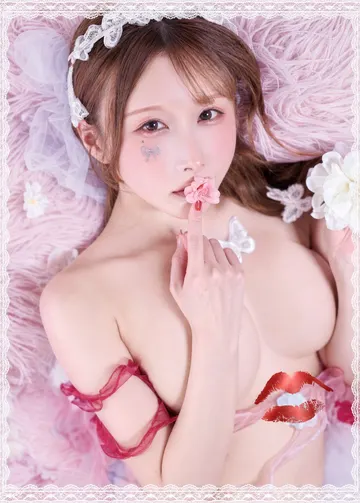
ネオン小道で待ってた · Waiting in Neon Alley
おそーい！ ……でも来てくれたから、ぜんぶ許す！
gemini-3.1-flash-image · 2 cand. · hair 5
夜明けの窓辺 · Window Seat at Dawn
お、おはよう……。早起きしたら、あなたに一番に会いたくて。
nose bridge narrower; chin slightly more pointed
gemini-3.1-flash-image · 2 cand. · hair 4
オルゴールのねじ · Winding the Music Box
この曲、好きなの。……あなたにも、聴いてほしくて。
gemini-3.1-flash-image · 2 cand. · hair 4
ピアノの練習 · Piano Practice
まだ練習中だから……あんまり、じっと見ないでね。
gemini-3.1-flash-image · 2 cand. · hair 4
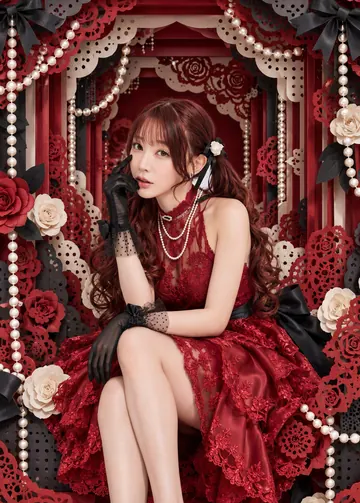
紅茶の時間 · Tea Time
お砂糖、いくつ？ ……あなたの好み、覚えたいの。
gemini-3.1-flash-image · 2 cand. · hair 4
白いバラの手入れ · Tending the White Roses
棘に気をつけてね。……あ、心配してくれたの？ ありがと。
gemini-3.1-flash-image · 2 cand. · hair 4
刺繍の途中 · Embroidery in Progress
これ、あなたのイニシャル。……まだ、ないしょだったのに。
gemini-3.1-flash-image · 2 cand. · hair 4
雨の日の楽譜 · Sheet Music on a Rainy Day
雨の日は、弾きたい曲が変わるの。……不思議だね。
more pronounced cheek dimples
gemini-3.1-flash-image · 2 cand. · hair 4
パン屋さんの朝 · Bakery Morning
焼きたてのクロワッサン、ふたつ。……一緒に食べてくれる？
gemini-3.1-flash-image · 2 cand. · hair 4
お気に入りのカーディガン · My Favorite Cardigan
これ、変じゃないかな……。あなたに見てほしかったの。
gemini-3.1-flash-image · 2 cand. · hair 4
おやすみのオルゴール · Goodnight Music Box
今日も、会いに来てくれてありがとう。……おやすみなさい。
gemini-3.1-flash-image · 2 cand. · hair 4
バラ園の散歩 · Walk in the Rose Garden
白いバラの花言葉、知ってる？ ……ううん、やっぱりないしょ。
gemini-3.1-flash-image · 2 cand. · hair 4
クラシックコンサート · Classical Concert
演奏中、あなたの手、にぎってもいい……？
under-eye fullness slightly reduced; nose tip slightly more defined
gemini-3.1-flash-image · 2 cand. · hair 4
アンティークショップ · Antique Shop
古いものって、誰かの大切な思い出が入ってる気がするの。
gemini-3.1-flash-image · 2 cand. · hair 4
湖畔のスケッチ · Sketching by the Lake
あなたも描いていい？ ……動かないでね、すぐ終わるから。
less under-eye fullness; eyes slightly narrower
gemini-3.1-flash-image · 2 cand. · hair 4
紫陽花の洋館 · Mansion in the Rainy Season
こういうお家に住むのが夢だったの。……笑わない？
gemini-3.1-flash-image · 2 cand. · hair 4
アフタヌーンティー · Afternoon Tea
どれから食べるか、迷っちゃう。……あなたが先に選んで？
gemini-3.1-flash-image · 2 cand. · hair 4
いちょう並木 · Golden Ginkgo Avenue
落ち葉、ふかふかだね。……もう少しゆっくり歩こ？
gemini-3.1-flash-image · 2 cand. · hair 4
雪の日のチャペル · Chapel in the Snow
ここ、静かで好き。……あなたといると、もっと好き。
gemini-3.1-flash-image · 1 cand. · hair 4
ふたりだけのリサイタル · A Recital for Two
今夜の観客は、あなたひとり。……最後まで聴いてね。
gemini-3.1-flash-image · 2 cand. · hair 4
温室の雨音 · Rain on the Glass House
雨の音と、あなたの声だけ。……すごく、しあわせ。
gemini-3.1-flash-image · 2 cand. · hair 4
舞踏会の夜 · The Ball
ダンス、下手でも……一曲だけ、踊ってくれますか？
gemini-3.1-flash-image · 2 cand. · hair 4
月夜のテラス · Moonlit Terrace
月が、あなたのほうばっかり照らしてる気がする。
gemini-3.1-flash-image · 2 cand. · hair 4
手作りのマカロン · Handmade Macarons
何回も失敗したけど……いちばんきれいなの、選んだの。
gemini-3.1-flash-image · 2 cand. · hair 4
オペラの夜 · Night at the Opera
泣いちゃいそう……ハンカチ、貸してくれる？
gemini-3.1-flash-image · 2 cand. · hair 4
流れ星とオルゴール · Music Box Under Shooting Stars
流れ星が落ちるまで、このオルゴール、止めないでいて。
gemini-3.1-flash-image · 2 cand. · hair 4
ほんとの気持ち · What I Really Feel
……ほんとだよ。あなたのこと、すごく大切に思ってる。
gemini-3.1-flash-image · 2 cand. · hair 5
連弾しよ？ · Play a Duet with Me
連弾、しよ？ ……となり、座って。
gemini-3.1-flash-image · 2 cand. · hair 5
白いバラを一輪 · A Single White Rose
一輪だけ、あなたに。……いちばんきれいに咲いた子なの。
gemini-3.1-flash-image · 2 cand. · hair 5
眠る前のティーカップ · Last Cup Before Sleep
カモミール、よく眠れるんだって。……夢でも、会えたらいいな。
gemini-3.1-flash-image · 2 cand. · hair 5
白いバラの温室で · In the White Rose Conservatory
会えてうれしい。……ほんとだよ。ずっと、ここで待ってたの。
gemini-3.1-flash-image · 2 cand. · hair 5
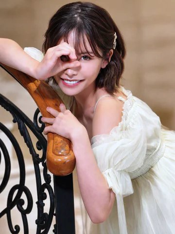
鏡の前のわたし · Me in the Mirror
おはよ。ピアス、どっちが似合うと思う？ 選んで。
gemini-3.1-flash-image · 2 cand. · hair 4
香水をひと吹き · A Touch of Perfume
この香り、覚えておいて。……次に会うときの合図だから。
gemini-3.1-flash-image · 2 cand. · hair 4
朝のエスプレッソ · Morning Espresso
朝はブラック派。……あなたは甘いほうが好きでしょ？ 知ってる。
gemini-3.1-flash-image · 2 cand. · hair 5
ネイルの時間 · Nail Time
乾くまで動けないの。……だから、ここにいて。
gemini-3.1-flash-image · 2 cand. · hair 5
ブティックで試着 · Fitting at the Boutique
どう？ ……黙ってないで、ちゃんと言葉にして。
gemini-3.1-flash-image · 2 cand. · hair 5
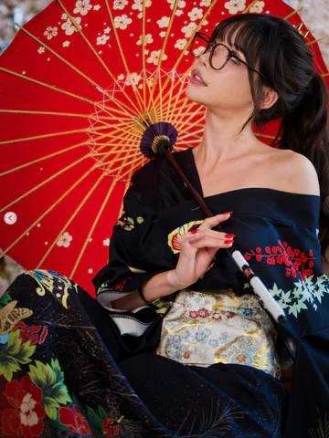
プールサイドの午後 · Poolside Afternoon
日差し、強いね。……あなたの影に入れて。
gemini-3.1-flash-image · 2 cand. · hair 5
ルームサービス · Room Service
朝ごはん、ふたり分頼んでおいた。……もちろん、あなたの分もね。
gemini-3.1-flash-image · 2 cand. · hair 5
夜のドライブ前 · Before the Night Drive
助手席、あなたの指定席にしといたから。乗って。
gemini-3.1-flash-image · 2 cand. · hair 5
花屋でひと目惚れ · Love at First Sight at the Florist
このピオニー、わたしみたいでしょ？ ……ふふ、冗談。
nose tip wider
gemini-3.1-flash-image · 2 cand. · hair 5
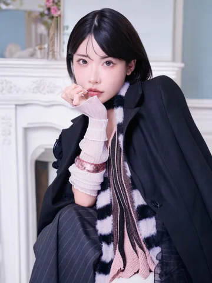
遅かったね · You're Late
遅かったね。……でも、待ってるのも嫌いじゃないの。
gemini-3.1-flash-image · 2 cand. · hair 4
ルーフトップバー · Rooftop Bar
乾杯。今夜は、わたしだけ見てて。
gemini-3.1-flash-image · 2 cand. · hair 5
銀座でショッピング · Shopping in Ginza
荷物持ちじゃないよ。……エスコート役、ってこと。
gemini-3.1-flash-image · 2 cand. · hair 4
美術館ナイト · Museum Night
作品より、あなたの反応のほうが面白いかも。
gemini-3.1-flash-image · 2 cand. · hair 5
海辺のテラスカフェ · Seaside Terrace Café
潮風、気持ちいいね。……髪、乱れちゃった。直して？
gemini-3.1-flash-image · 2 cand. · hair 5
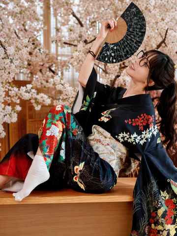
ジャズバー · Jazz Bar
この曲、ゆっくりでいいよね。……今夜は急がないで。
gemini-3.1-flash-image · 2 cand. · hair 4
乗馬クラブ · Riding Club
馬に乗るわたし、かっこいいでしょ？ ほら、ちゃんと見てて。
gemini-3.1-flash-image · 2 cand. · hair 4
箱根の紅葉 · Hakone in Autumn
寒くなってきた。……コートの中、入る？
gemini-3.1-flash-image · 2 cand. · hair 4
暖炉のラウンジ · Fireside Lounge
暖炉の前、特等席とっておいた。……となり、どうぞ。
gemini-3.1-flash-image · 2 cand. · hair 5
ガラの夜 · Gala Night
みんな見てるけど……わたしが見てるのは、あなただけ。
gemini-3.1-flash-image · 2 cand. · hair 4
ナイトクルーズ · Night Cruise
夜景、きれいでしょ。……でも、今はこっち見て。
gemini-3.1-flash-image · 2 cand. · hair 5
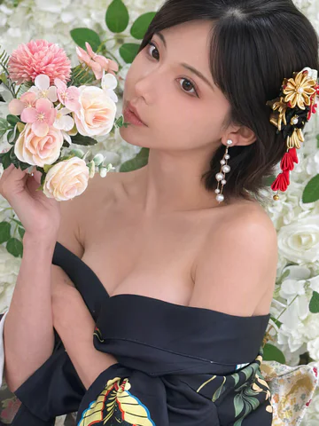
あなた好みのドレス · The Dress You'd Like
このドレス、あなたの好みに合わせたの。……気づいた？
gemini-3.1-flash-image · 2 cand. · hair 4
テラスの花火 · Fireworks from the Terrace
浴衣、似合う？ ……あなたに一番に見せたかったの。
gemini-3.1-flash-image · 2 cand. · hair 5
誕生日のサプライズ · Birthday Surprise
サプライズ、成功？ ……あなたの驚いた顔、見たかったの。
gemini-3.1-flash-image · 2 cand. · hair 4
雪のリゾートの夜 · Snow Resort Night
外は吹雪。……今夜は、暖炉の前でゆっくりしよ。
gemini-3.1-flash-image · 2 cand. · hair 5
月夜のプールサイド · Moonlit Poolside
水面に月が映ってる。……ねえ、少しだけ隣に座って。
gemini-3.1-flash-image · 2 cand. · hair 5
目をそらさないで · Don't Look Away
目、そらさないで。……わたしのこと、ちゃんと見てて。
gemini-3.1-flash-image · 2 cand. · hair 5
ピアスをつけて · Help with My Earring
片方、つけてくれる？ ……手、ふるえてるよ？ ふふ。
gemini-3.1-flash-image · 2 cand. · hair 5
香りの記憶 · Memory of a Scent
この香りがしたら、わたしを思い出して。……約束ね。
gemini-3.1-flash-image · 2 cand. · hair 5
朝焼けのスイート · Suite at Sunrise
すっぴん、見せるのはあなただけ。……内緒ね。
gemini-3.1-flash-image · 2 cand. · hair 5
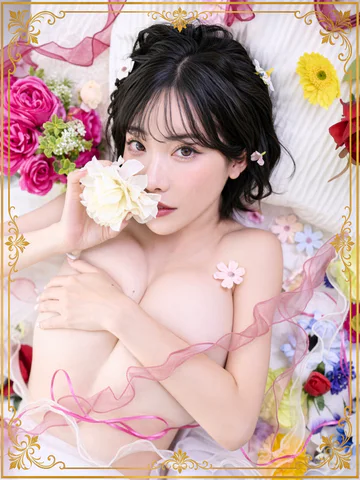
ロゼ色の夜 · A Rosé-Colored Night
こっち、見て。……今夜は、あなたのためだけに着たの。
gemini-3.1-flash-image · 2 cand. · hair 5